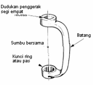
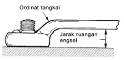
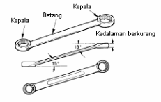
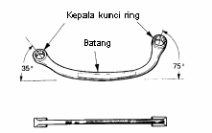

Perhitungan Motor Bakar
-
Volume silinder (Vs)
Volume silinder adalah volume dimana piston bergerak dari titik mati atas (TMA) sampai titik mati bawah (TMB). Volume silinder dinyatakan dengan cm³/cc atau liter (l).
Jika lebih dari satu silinder maka,
 Keterangan
Vs = volume silinder (cm³)
D = diameter silinder (cm)
S = langkah torak/ L (cm)
n = jumlah silinder
Keterangan
Vs = volume silinder (cm³)
D = diameter silinder (cm)
S = langkah torak/ L (cm)
n = jumlah silinder
-
Perbandingan kompresi

-
Momen Torsi
Momen mesin atau torsi adalah nilai yang menunjukkan gaya putar pada output mesin (poros engkol) yang diperoleh dari tenaga hasil pembakaran didalam silinder. Satuan yang digunakan pada momen adalah Nm. Momen/torsi merupakan hasil kali antara Gaya putar mesin (F) dan jarak (d). Sehingga, torsi dapat dihitung dengan rumus :
 Keterangan:
Keterangan:

-
Daya Mesin
Daya mesin dihitung dengan satuan KW (Kilowatts). Selain itu juga dinyatakan dalam HP (Horse Power) atau PS (Pferdestarke/Germany Horse Power). Untuk mengkonversi satuan daya dalam HP dan PS disajikan dalam table berikut.

Jika torsi dinyatakan dalam ,
putaran mesin dalam n,
maka daya (N) dapat dihitung dengan rumus :


Daya Efektif dapat dirumuskan sebagai berikut.
 Keterangan
Keterangan

-
Efisiensi Mekanik
Efisiensi mekanis (ηM) dipengaruhi oleh komponen-komponen mekanis yang dipasang pada motor tersebut. Selain itu juga tergantung kecepatan mesin. Semakin besar kecepatan, semakin besar pula daya yang digunakan untuk menggerakkan motor. Ini berarti bahwa rugi-rugi mekanis semakin besar bila kecepatan motor semakin tinya gesek mesin. Efisiensi mekanik dapat dihitung sebagai berikut.
 Keterangan:
Keterangan:

-
Efisiensi Volumetrik
Efisiensi volumetrik (ηV) mengungkapkan seberapa banyak campuran udara-bahan bakar masuk ke dalam silinder. Campuran udara-bahan bakar yang memasuki silinder ketika langkah hisap inilah yang akan menghasilkan daya. Efisiensi volumetric merupakan perbandingan antara volume campuran bahan bakar (Vi) dan udara yang masuk kedalam silinder (VL).
 Keterangan :
Keterangan :
Vi = volume campuran bahan bakar
VL = udara yang masuk kedalam silinder
-
Firing Order
Firing-order diperlukan pada setiap engine yang mempunyai silinder lebih dari satu. Jika kita punya sepeda motor dengan dua silinder, maka pengsapian businya akan terjadi bergantian antara silinder yang satu dengan silinder yang lain setiap engine berputar setengah siklus pembakaran. Pada engine 4-langkah (4-tak) satu siklus pembakaran menempuh jarak 2 kali putaran engine atau 720º sehingga pengapian pada engine 2 silinder terjadi setiap 360º sekali. Pada engine mobil biasa yang biasanya hanya terdiri atas 4 silinder, firing-order yang paling umum adalah 1-3-4-2 karena urutan itu memberikan getaran yang paling rendah.
Firing order biasanya ditentukan dengan mempertimbangkan jumlah silinder dan getaran yang mungkin timbul. Firing order tiap-tiap mesin berbeda tergantung dari masing-masing produsen mesin. Firing order ini tidak perlu dirubah-rubah firing order yang umum digunakan adalah sebagai berikut
Tabel firing order
 Diagram kerja motor adalah penggambaran kerja langkah-langkah motor secara keseluruhan yang ditampilkan dalam satu diagram. Dibawah ini ditunjukakan contoh gambar daigram kerja motor 4 tak 4 siinder dengan firing order 1-3-4-2. karena proses kerja motor 4 tak adalah 2 kali poros engkol, maka jarak pengapian tiap silindernya adalah 720 : 4= 180 artinya kompresi antara silinder satu dengan urutan berikutnya adalah 1800 dan juga dengan silinder seterusnya
Diagram kerja motor adalah penggambaran kerja langkah-langkah motor secara keseluruhan yang ditampilkan dalam satu diagram. Dibawah ini ditunjukakan contoh gambar daigram kerja motor 4 tak 4 siinder dengan firing order 1-3-4-2. karena proses kerja motor 4 tak adalah 2 kali poros engkol, maka jarak pengapian tiap silindernya adalah 720 : 4= 180 artinya kompresi antara silinder satu dengan urutan berikutnya adalah 1800 dan juga dengan silinder seterusnya
Tabel diagram kerja
 Dari diagaram diatas dapat dilihat bahwa saat silinder 1 pada langkah kompresi ,silinder 2 sedang langkah usaha, silinder 3 sedang langkah hisap, silinder 4 sedang langkah buang.
Dari diagaram diatas dapat dilihat bahwa saat silinder 1 pada langkah kompresi ,silinder 2 sedang langkah usaha, silinder 3 sedang langkah hisap, silinder 4 sedang langkah buang.
Jarak pengapian adalah jarak terjadinya pengapian dari silinder 1 ke silinder berikutnya sesuai dengan urutan pengapian. Jarak pengapian didapat dengan rumus : , dimana 7200 = 2 kali putaran engkol atau 4 langkah, sedang i = jumlah silinder.